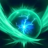
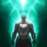

Прогресс прокачки
Отмечай шаги по ходу игры. Прогресс хранится в этом браузере, отдельно для каждого класса.
WIP Гайд в работе
Надёжного глобального источника по этому классу пока нет. Гайд собран из корейских гайдов и глобальных данных о скиллах — считай его отправной точкой; он будет переработан, когда появятся нормальные глобальные билды.
Обзор
В подземельях AION 2 Целитель — лекарь, который обязан наносить урон: награда зависит от вклада, и Целитель, который только лечит, может остаться ни с чем. У группы хватает своих уклонений и неуязвимостей — подлечивай тех, кто только что получил урон, а всё остальное вкладывай в урон.
Билд в одном предложении
Возмездие природы делает Приговор всегда критическим, а крит сбрасывает Приговор — так он бьёт без перезарядки, а Священная аура, Раскат грома и Благородная аура добавляют урон сверху.
Режим построен на PvE-гайде Kaeria по Целителю (на русском, записан на тайваньском клиенте; по её словам, подходит и для глобалки). Выбор скиллов бесплатно меняется в один клик — ресурсы стоят только арканы.
Скиллы
Почти всё уходит в урон. Из лечения важны два скилла на 16: Целительный свет и Свет исцеления.
-
Приговор 16 20Самый важный скилл на панели: +12% по одной цели и сброс перезарядки при крите. На 20 добавь ману, если её не хватает, иначе мультиудар.
- 8До +12% к урону при меньшем количестве пораженных целей
- 12При попадании крит. удара умения [Кара] время перезарядки умения сбрасывается
Все специализации
- 8Восстановление 100 ОМ при попадании
- 8До +12% к урону при меньшем количестве пораженных целей
- 8Активирует Плен в теч. 3s с шансом 20%
- 12При попадании крит. удара умения [Кара] время перезарядки умения сбрасывается
- 16Гарантир. мультиудар при попадании
-
Священная аура 16 20Недооценённый: бьёт параллельно с тобой, поэтому чем дольше стоит — тем лучше. Скорость атаки, +3 сек., −10 сек. перезарядки.
- 8СКР выстрелов [Священной ауры] +50%
- 12Длительность [Священной ауры] +3 сек.
- 16Перезарядка -10 сек.
Все специализации
- 8-40% к СКР движ. на 3s макс. 4 врагам в радиусе 4 м от Ауры
- 8Смена на массовое умение
- 8СКР выстрелов [Священной ауры] +50%
- 12Длительность [Священной ауры] +3 сек.
- 16Перезарядка -10 сек.
-
Раскат грома 16 20Самый сильный удар. Заряжай на максимум. +30% скорости умения, +20% урона по одной цели; на 20 добавь гарантированный крит.
- 8СКР умений +30%
- 12Чем меньше целей попадания, тем больше увеличение урона (макс. до 20%)
Все специализации
- 8Шанс 30% оглушить на 3s при макс. поражении
- 8Меткость умений +300
- 8СКР умений +30%
- 12Чем меньше целей попадания, тем больше увеличение урона (макс. до 20%)
- 16Гарантир. крит. удар при попадании
-
Карающая молния 16Постоянный урон и отмена анимаций; специализация на Божественную кару примерно удваивает урон. На 20 добавь −20% маны.
- 8Чем меньше целей попадания, тем больше увеличение урона (макс. до 12%)
- 16Доп. срабатывание [Небесного приговора] 1 раз
Все специализации
- 8Затрата ОМ -20%
- 8Чем меньше целей попадания, тем больше увеличение урона (макс. до 12%)
- 8СКР боя -10% на 5s при попадании [Небесного приговора]
- 12Шанс 10% взять в плен на 2s при попадании [Небесного приговора].
- 16Доп. срабатывание [Небесного приговора] 1 раз
-
Шквал молний 16Только во время ошеломления, но каждый удар сокращает все перезарядки на 1 сек.
- 12Гарантир. мультиудар при попадании
- 16Перезарядка всех умений -1s при попадании
Все специализации
- 8Поглощение 5% ОЗ
- 8Восстановление 120 ОМ
- 8Замена на умение с возможностью перемещения
- 12Гарантир. мультиудар при попадании
- 16Перезарядка всех умений -1s при попадании
-
Целительный свет 16Быстрый хил почти без отката: +2 использования и +2% ОЗ (растут от усиления исцеления). На 20 добавь −2 сек.
- 8+2 применения подряд
- 12Доп. восстановление 2% ОЗ
Все специализации
- 8+2 применения подряд
- 8Восстановление ОЗ +20% при ОЗ 50% или ниже
- 8Шанс 50% снять 1 эффект ослабления
- 12Доп. восстановление 2% ОЗ
- 16Перезарядка -2 сек.
-
Свет исцеления 16Самый сильный хил без стигм; снимает дебафф. На 20 добавь −3 сек.
- 16Доп. восст. 5% ОЗ
Все специализации
- 8Снимает до 2 эффектов ослабления
- 8СКР умений +20%
- 8-3 сек. к перезарядке
- 12+10% к получ. исцелению на 10s
- 16Доп. восст. 5% ОЗ
-
Возмездие земли 12 16Базовая атака для отмены анимаций: шанс Разряда и −7 сек. к Раскату грома при Разряде.
- 8Шанс активировать цепное умение [Электрический разряд] +20%
- 12Перезарядка [Раската грома] -7s при попадании [Электрическим разрядом]
Все специализации
- 8Восстановление ОМ +20%
- 8Шанс активировать цепное умение [Электрический разряд] +20%
- 8Шанс мультиудара +50% при попадании
- 12Перезарядка [Раската грома] -7s при попадании [Электрическим разрядом]
- 16Попадание несмотря на блок и уклонение
-
Клеймо бессилия 12−15% защиты босса и меньше урона от него.
- 8ЗЩТ цели -15% под действием постоянного урона
- 12Увеличение урона в PvE доп. -10%, увеличение урона в PvP доп. -5%
Все специализации
- 8Удаление затраты ОМ, восстановление 150 ОМ
- 8ЗЩТ цели -15% под действием постоянного урона
- 8Шанс 20% оглушить цель на 3s
- 12Увеличение урона в PvE доп. -10%, увеличение урона в PvP доп. -5%
- 16Игнорирует блок и УКЛ и сокращает интервал постоянного урона на 50%
-
Цепь боли 14Нужна, чтобы работал Приговор; −10% стойкости к урону в PvE у босса.
- 8Постоянный урон +3 сек.
- 12Стойкость к урону в PvE доп. -10%, стойкость к урону в PvP доп. -5%
Все специализации
- 8Замедление цели на 5s
- 8Постоянный урон +3 сек.
- 8Шанс 20% сбить цель с ног на 3s
- 12Стойкость к урону в PvE доп. -10%, стойкость к урону в PvP доп. -5%
- 16Игнорирует блок и УКЛ и сокращает интервал постоянного урона на 50%
-
Целебный луч 12–16Обновляй по откату; на 16 бери 5% стойкости.
- 8ЗЩТ +5% во время восстановления
- 16Стойкость к урону в PvE +5%, стойкость к урону в PvP +2.5% во время восстановления
Все специализации
- 8ЗЩТ +5% во время восстановления
- 8Восстановление ОЗ +20% при ОЗ 50% или ниже
- 8Получ. исцеление +5% во время восстановления
- 12СКР движ. +5% во время восстановления
- 16Стойкость к урону в PvE +5%, стойкость к урону в PvP +2.5% во время восстановления
-

Снятие шока 12Снятие контроля; 10% ОЗ и +2 сек. неуязвимости к контролю.- 8При использовании [Снятия шока] восстанавливает 10% ОЗ
- 12Длительность Непреклонности +2 сек.
Все специализации
- 8Добавляет 2-ное комбо [Регенерация]
- 8При использовании [Снятия шока] восстанавливает 1000 ОД
- 8При использовании [Снятия шока] восстанавливает 10% ОЗ
- 12Длительность Непреклонности +2 сек.
- 16Стойкость к урону в PvE +50% и стойкость к урону в PvP +25% во время действия Непреклонности
Пассивки
- Благосклонность Владык Эмпирея — самая важная: крит. урон, двойной шанс и доп. урон при каждом ударе. Качай насколько можешь.
- Дар земли — раньше баффала группу, теперь только тебя; всё равно стоит качать.
- Усиление исцеления — усиление исцеления, если лечишь много.
- Сияющее покровительство — лечит союзников рядом при атаках; бери, если уходишь целиком в урон.
- Тепло благословения и Аура бессмертия — неплохо иметь; Покровительство Владык Эмпирея — для PvP.
Стигмы
-
Возмездие природы Ур. 15 20Приговор всегда критует (значит, без перезарядки), а группа получает защиту, атаку и двойной шанс. Один из самых важных скиллов.
- 5По целям под действием [Возмездие природы] умение [Приговор] всегда наносит крит. удар.
- 10[Благословение природы] +10% к шансу мощного удара персонажа и +5 союзников
- 15[Благословение природы] +10% к АТК и ЗЩТ персонажу, +5% к АТК и ЗЩТ членам группы
- 20+10 сек. к длительности [Возмездия природы] и [Благословения природы]
Все специализации
- 5По целям под действием [Возмездие природы] умение [Приговор] всегда наносит крит. удар.
- 10[Благословение природы] +10% к шансу мощного удара персонажа и +5 союзников
- 15[Благословение природы] +10% к АТК и ЗЩТ персонажу, +5% к АТК и ЗЩТ членам группы
- 20+10 сек. к длительности [Возмездия природы] и [Благословения природы]
-
Свет спасения Ур. 20Твоя мантра: входящее исцеление, точность, +10% ОЗ и шанс идеального удара, без отката. Не складывается с мантрой Чародея — с Чародеем в группе меняй её.
- 5Получ. исцеление +10%
- 10Меткость +100
- 15Макс. ОЗ +10%
- 20Совершенный удар +10%
Все специализации
- 5Получ. исцеление +10%
- 10Меткость +100
- 15Макс. ОЗ +10%
- 20Совершенный удар +10%
-
Молитва усиления Ур. 10++20% атаки по откату и усиление Благосклонности Владык Эмпирея и Дара земли. Без неё у Целителя нет урона.
- 5+20% к усилению урона в PvE, +10% к усилению урона в PvP
- 10Эффект [Благосклонности Владык Эмпирея] во время действия умения x1,5
Все специализации
- 5+20% к усилению урона в PvE, +10% к усилению урона в PvP
- 10Эффект [Благосклонности Владык Эмпирея] во время действия умения x1,5
- 15Эффект [Дар земли] во время действия умения x1,5
- 20АТК доп. +15%
-
Благородная аура Ур. 10+Шар, который бьёт вместе с тобой, — примерно вдвое больше урона; чем выше уровень, тем лучше.
- 5Крит. удар от ауры +200
- 10Урон по цели с Клеймом бессилия +20%
Все специализации
- 5Крит. удар от ауры +200
- 10Урон по цели с Клеймом бессилия +20%
- 15Урон по цели с иммунитетом к обездвиживанию +30%
- 20Перезарядка атаки ауры -1 сек.
-
Отпущение святилищеСамый сильный хил из стигм, но хорош только с 15. Ставь, только если группе не хватает лечения.
- 5Перезарядка -30 сек.
- 10Снятие всех эффектов ослабления
- 15Доп. восстановление 5% ОЗ
Все специализации
- 5Перезарядка -30 сек.
- 10Снятие всех эффектов ослабления
- 15Доп. восстановление 5% ОЗ
- 20Доп. восстановление 1.5% ОЗ с интервалом 2s в течение 10s
-
Сила Юстиэль святилищеСтойкость к урону для группы на 10 сек. — замена в святилищах вместо Благородной ауры или Молитвы.
- 5Создание защитной оболочки, равной 10% от макс. ОЗ
- 10Блок и УКЛ +100
- 15Сопротивление негат. эффектам +20%
Все специализации
- 5Создание защитной оболочки, равной 10% от макс. ОЗ
- 10Блок и УКЛ +100
- 15Сопротивление негат. эффектам +20%
- 20Стойкость к урону в PvE доп. +10%, стойкость к урону в PvP доп. +5%
-
Воскрешение призыванного существа Ур. 5На старте держи на 5; бери, если группа постоянно умирает.
- 5Время применения -1 сек.
Все специализации
- 5Время применения -1 сек.
- 10Эффект Неуязвимости на 3s после воскрешения
- 15Восстановление 20% от макс. ОЗ
- 20Эффект Неуязвимости на 5s после воскрешения
-

Спасение не брать3 сек. неуязвимости с долгим откатом — красные атаки всё равно проходят; лучше уклоняйся.Все специализации
- 5Получ. исцеление +100%
- 10Восстановление 20% от макс. ОЗ после завершения действия [Избавления]
- 15Наложение базового эффекта [Избавления] на участника группы с наименьшим показателем ОЗ
- 20Спасение при воздействии шок. эффекта
С Чародеем в группе: вместо Света спасения ставь любой хил или Воскрешение. Крик смерти (−15% сопротивления криту у босса на 15) — вариант для святилищ со вторым хилом; Всплеск энергии — только если группе не хватает ошеломления.
Макрос
Kaeria использует только встроенный макрос, без стороннего софта, — так между шагами макроса можно нажимать хилы.
- ДержатьВстроенный макрос на ПКМ вместе с клавишей линии базовой атаки (у неё это 3).
- ОшеломлениеШквал молний стоит в макросе: когда босс ошеломлён, отпусти клавишу базовой атаки и держи только макрос.
- ВручнуюХил тому, кто только что получил урон, полностью заряженный Раскат грома, Молитва усиления по откату.
Точные линии на кнопках видны только на экране в видео. На глобалке с меньшим пингом можно чаще вплетать Возмездие земли.
Статы, Daevanion, арканы
- Строки экипировки: Мощь (атака и хил), скорость боя, увеличение урона; урон оружия и точность тоже сильные. Сопротивления статусам, уклонение и защитные строки в PvE не нужны.
- Кольца: скрафти как можно раньше — у крафтовых колец на одну строку больше под активные скиллы.
- Статы: Destruction, Wisdom (двойной шанс), Illusion (перезарядка), Time (скорость боя), Freedom (точность); Мощь, точность, телосложение.
- Daevanion: сначала оранжевые узлы перезарядки и скорости боя, затем атака и крит, потом синие узлы скиллов, в конце защита.
| Аркана | Сет / стат | Что ловить |
|---|---|---|
| Кубок | Vigor (скорость боя) | Всё, что поднимает ключевые скиллы до 16 → 20 |
| Свиток | Destiny или Life | Приговор, Свет исцеления, Возмездие земли, Раскат грома |
| Компас | Death или Freedom | Шквал молний, Целительный свет, Священная аура, Карающая молния |
| Колокол | Destruction | Благосклонность Владык Эмпирея (без Инстинкта выживания) |
| Зеркало | Wisdom (урон) или Illusion (перезарядка) | Дар земли, Усиление исцеления |
Итог
- Скиллы: Приговор, Священная аура, Раскат грома 16 → 20; Карающая молния, Шквал молний, Целительный свет, Свет исцеления 16; остальное 12–14.
- Стигмы: Возмездие природы, Свет спасения, Молитва усиления, Благородная аура (с Чародеем меняй Свет спасения).
- Игра: наноси урон ради вклада; лечи только тех, кто только что получил урон.
Обзор
Целитель — лекарь, но на прокачке он играет как дальнобойный боец: Цепь боли метит цель, Приговор добивает её, а пассивка Сияющее покровительство лечит тебя и группу при каждом попадании. Лечись только когда нужно.
Прокачка в одном предложении
Держи Возмездие земли ради маны, крути линию Цепи встроенным макросом и вкладывай очки навыков в атаки, а не в лечение.
Как сражаться во время прокачки
- Пачки: Цепь боли (бьёт до 4 целей) → Приговор → Священная аура со специализацией на АоЕ → Карающая молния.
- Элитки: Клеймо бессилия (снижает защиту) → Цепь боли → заряженный Раскат грома → Приговор.
- Мана: режим с таргетом и Возмездие земли между скиллами — он восполняет ману каждым кастом.
- Мало ОЗ: Целительный свет, а Сияющее покровительство лечит, пока ты бьёшь.
- Ошеломлённый босс: Шквал молний работает только пока цель ошеломлена.
Макрос на прокачке
Стартовая настройка Grobs: одна линия на кнопке и встроенный макрос из одного слота. В AION 2 наивысший приоритет у нижнего слота линии — карточка показывает линию сверху вниз, как в игре.
- 4 Карающая молния
- 3 Приговор
- 2 Клеймо бессилия
- 1 Цепь боли
Порядок как в игре, сверху вниз. 1 = высший приоритет — нижний слот.
Цепь боли идёт первой, чтобы Приговор мог бить; Карающая молния без перезарядки заполняет паузы.
Встроенный макрос (окно скиллов → Макрос), задержка 10 мс:
- 1Линия Цепи10 мс
- ДержатьВозмездие земли на ЛКМ вместе с кнопкой макроса.
- ВручнуюРаскат грома (скилл с зарядом — не в макрос), лечение, стигмы.
Стигмы на прокачке
Стигмы открываются на 22 уровне.
-
Воскрешение призыванного существа Ур. 1Поначалу хватит одного очка; на 5 уровне позже сокращается время каста.
Все специализации
- 5Время применения -1 сек.
- 10Эффект Неуязвимости на 3s после воскрешения
- 15Восстановление 20% от макс. ОЗ
- 20Эффект Неуязвимости на 5s после воскрешения
-
Благородная аура Ур. 5Аура, которая 5 минут сражается рядом с тобой, — бесплатный урон.
- 5Крит. удар от ауры +200
Все специализации
- 5Крит. удар от ауры +200
- 10Урон по цели с Клеймом бессилия +20%
- 15Урон по цели с иммунитетом к обездвиживанию +30%
- 20Перезарядка атаки ауры -1 сек.
-
Возмездие природы Ур. 5Урон со временем; на 5 уровне Приговор всегда критует.
- 5По целям под действием [Возмездие природы] умение [Приговор] всегда наносит крит. удар.
Все специализации
- 5По целям под действием [Возмездие природы] умение [Приговор] всегда наносит крит. удар.
- 10[Благословение природы] +10% к шансу мощного удара персонажа и +5 союзников
- 15[Благословение природы] +10% к АТК и ЗЩТ персонажу, +5% к АТК и ЗЩТ членам группы
- 20+10 сек. к длительности [Возмездия природы] и [Благословения природы]
-
Целительная сила Ур. 5Лечение со временем на 20 сек. — живучесть между пачками.
- 5Длительность +10 сек.
Все специализации
- 5Длительность +10 сек.
- 10Восстановление 200 ОД с интервалом 5s во время действия эффекта
- 15Восстановление 2% ОЗ с интервалом 5s во время действия эффекта
- 20Эффект Очищения с интервалом 5s во время действия эффекта
-
Отпущение Ур. 5Сильное лечение и снятие дебаффов.
- 5Перезарядка -30 сек.
Все специализации
- 5Перезарядка -30 сек.
- 10Снятие всех эффектов ослабления
- 15Доп. восстановление 5% ОЗ
- 20Доп. восстановление 1.5% ОЗ с интервалом 2s в течение 10s
Источники
- Kaeria — PvE-гайд на Целителя — режим PvE: уровни и специализации скиллов, стигмы, пассивки, статы, Daevanion, арканы
- Grobs — AION 2 Macro Guide — слайд со стартовыми макросами (линия и макрос Целителя)
- MMO Codex — гайд на Целителя Aion 2 — порядок скиллов и специализации на прокачке, стигмы на 22
- questlog.gg — данные скиллов из глобального клиента
Сообщить об ошибке Откроет issue на GitHub для этой страницы